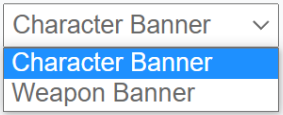
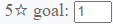
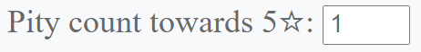
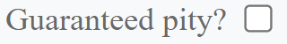
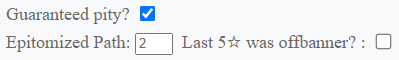
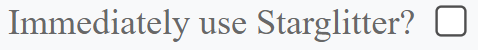

How to use
Select the right banner
This site features 2 types of banners.
From the dropdown list, you can select the following:
Event Character Banner
Event Weapon Banner
Once selected, the simulation will mimic pulls on said banner.
The initial option is set to Character Banner.
Amount to pull

Select the amount of promoted 5-star items you want to pull for.
On the character banner, the 5-star goal is restricted to 7, which equals to a C6 character.
The weapon banner, however, is unrestricted on that option.
Pity System
Enter the pity count here, the number of wishes made since the last + 1.
The logic for the +1 here is, that it count the pity for the next pull.
For example, if "1" is entered, it means no pulls have yet been made sice the last 5-star item drop, and the next pull will be the first pull that counts towards the next pity; hence "1".
Egligible numbers are:
- Character Banner: 1 to 90
- Weapon Banner : 1 to 80
Guaranteed pity
1: For character banner
Genshin guarantees a promoted 5-star character as the next 5-star drop, if the last one was not the promoted one.
Check this checkbox to guarantee the next 5-star item to be the promoted character.
2: For weapon banner

The epitomized path has been added to the weapon banner. This guarantees that at least one of every three 5-star weapons is the desired one.
Enter the amount of Fate Points you own for the current weapon banner.
Another pity system on the weapon banner is, that once an off banner 5-star weapon has been obtained, then the next 5-star weapon will be one of the two promoted ones.
Check the checkbox to guarantee the next 5-star weapon to be a promoted weapon.
Use Starglitter
This option lets you use Starglitter and exchange it for extra pulls, as soon as as you get 5 starglitter. These extra pulls will be prioritized and will not count towards the total pull count. So it will result in less average pulls needed.

For the character banner, the amount of constellation can heavily alter the average amount of starglitter you get. To be as accurate as possible, you have the option to enter the constellation for all promoted characters on the banner.
Egligible inputs are:
- -1 : Not owning the character
- 0 : Constellation 0
- 1 : Constellation 1
- 2 : Constellation 2
- 3 : Constellation 3
- 4 : Constellation 4
- 5 : Constellation 5
- 6 : Constellation 6